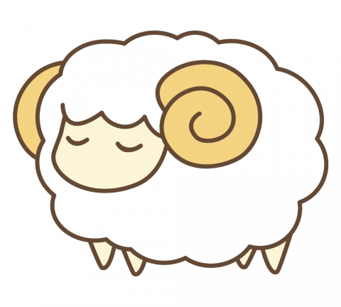
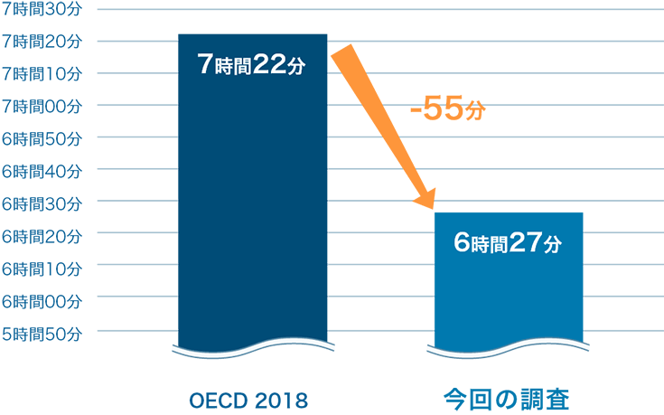
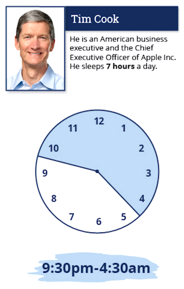
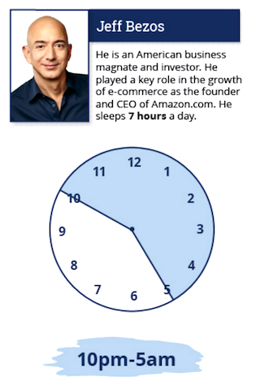
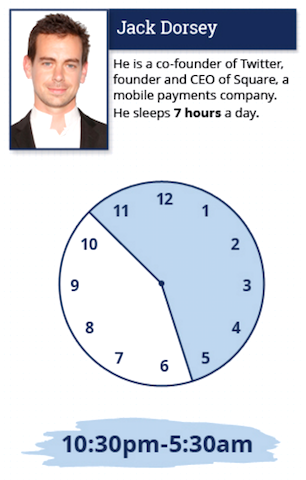

Gooについて

Gooは夜眠れない人や眠りの浅い方のために寝具や
睡眠に関する記事をまとめたサイトです。
睡眠に関する記事をまとめたサイトです。
あおやぎさん

日本人の睡眠時間は、2018年OECDの調査によると7時間22分で世界WORST１の短さでした。24時間社会を背景に近年さらに睡眠時間が短くなり、6時間未満の睡眠時間の日本人が全人口の4割を占めると報告されていました。
今回の調査結果では日本人の睡眠時間の平均が6時間27分と、世界で一番悪いと言われた時と比べて、さらに55分短いことがわかりました。
今の日本は「睡眠負債」の蓄積に留まらず、さらに破綻に向かっている傾向にあると言えます。
成功を収めている人たちの睡眠時間

ティム・クック
AppleのCEOは、一日7時間睡眠。しかも、今回登場するどの成功者よりも早くベッドに入っていることが判明。毎朝4時半に起床し、部下への支持をメールで送り、それからジムで体を動かすことが習慣らしい。
「Amazon.com」の共同創設者であり、世界有数の資産家。ここでは7時間となっているものの、8時間睡眠の必要性を訴える人物。自身の著書にも「どんな心配事があっても、電気を消したら5分後にはもう眠っている」と豪語するほど。

ジェフ・ベゾス

ジャック・ドーシー
Microsoft創業者で、現在では「ビル&メリンダ・ゲイツ財団」の共同会長を務めている。スタートアップの現役時代は、友人たちから”スリープレス（不眠）“と揶揄されるほど、開発に時間をかけていたそうだが、現在では7時間のリズムだそう。
「Amazon.com」の共同創設者であり、世界有数の資産家。ここでは7時間となっているものの、8時間睡眠の必要性を訴える人物。自身の著書にも「どんな心配事があっても、電気を消したら5分後にはもう眠っている」と豪語するほど。

ビル・ゲイツ